El trabajo que nosotros realizamos como equipo
Con ayuda de los instructores, pudimos correr las tres redes via Jupyter Notebook en Google Colab, visualizarlas y analizarlas, e identificar
posibles fármacos de interés debido a su alta interacción con proteínas de Sars-Cov-2. Esto con el objetivo de señalar moléculas terapéuticas ya existentes
en lugar de desarrollar nuevas, lo que puede implicar inversiones y periodos considerables.
Primero se importaron los grafos de COVID-Human PPI y Human-Drug PPIs, ya que trabajaremos con ellos principalmente en este proceso.
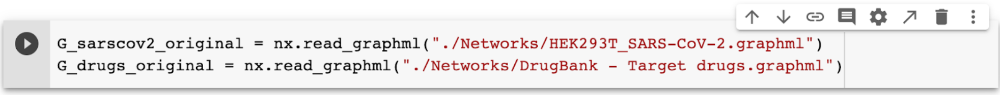
Después, se obtuvo la información general de cada grafo, de esta manera:
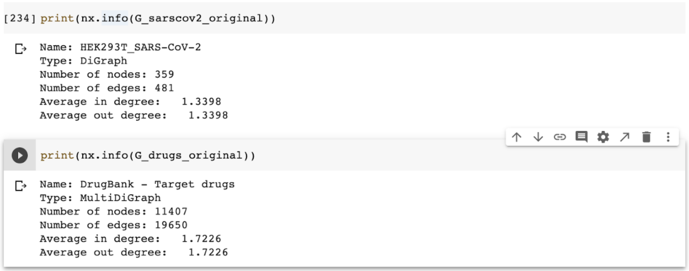
Pero primero tenemos que hacerlos “undirected graphs”, para que la información pueda tener sentido:
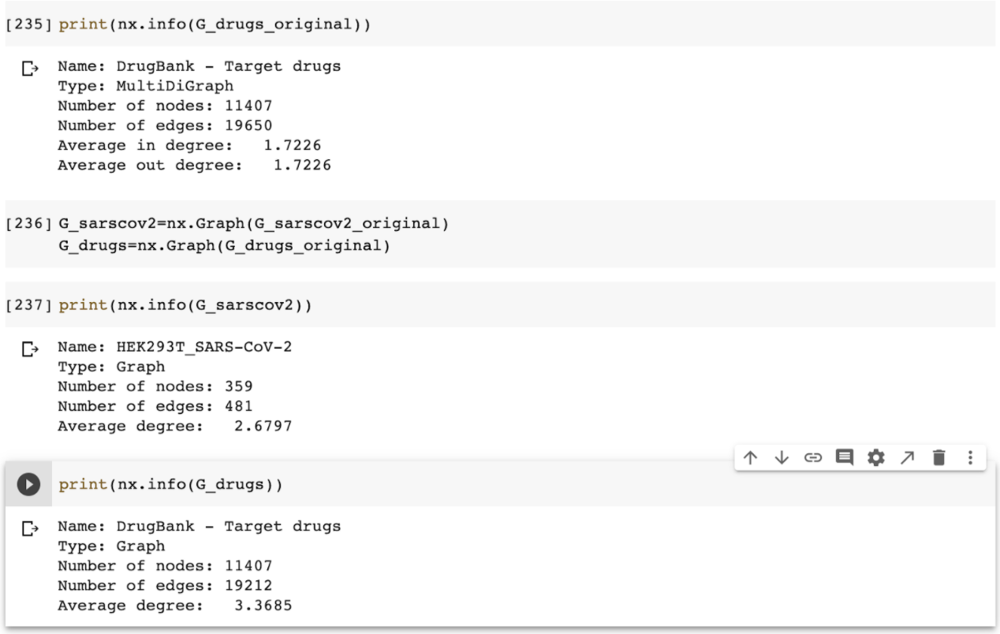
Ahora lo que pasaremos a hacer es poner la información que está en los nodos de cada Network:
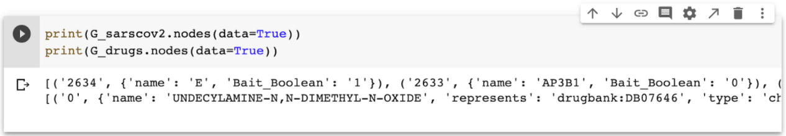
Y teniendo esto, podemos proseguir a renombrarlos apropiadamente:
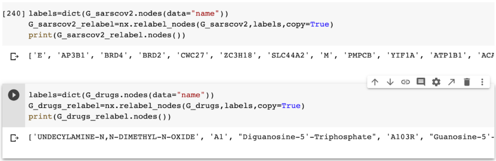
Para poder diferenciarlos en una Network mayor, tenemos que ponerles a cada nodo un color, y así no confundirnos al momento de juntar las dos Networks:
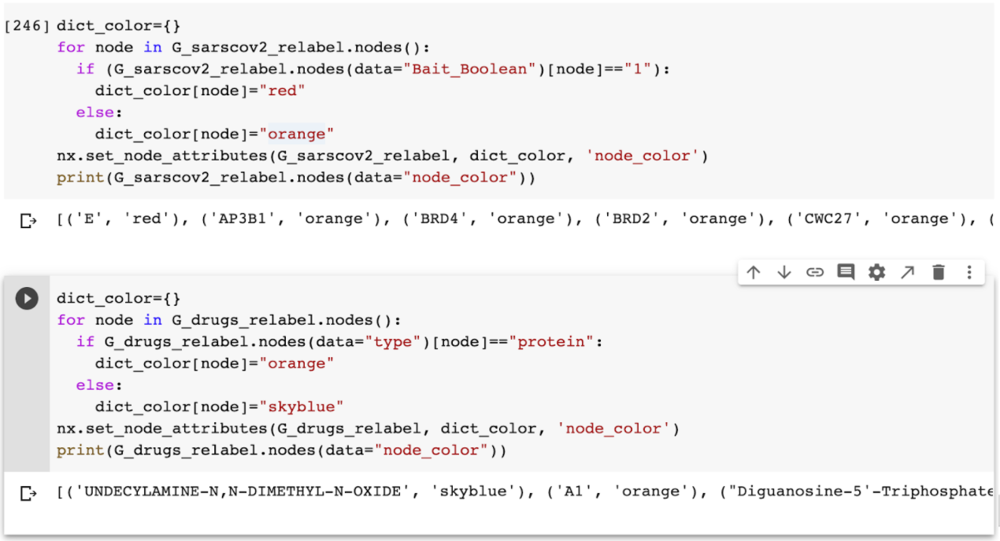
Y continuaremos a juntar las dos redes, de este modo:
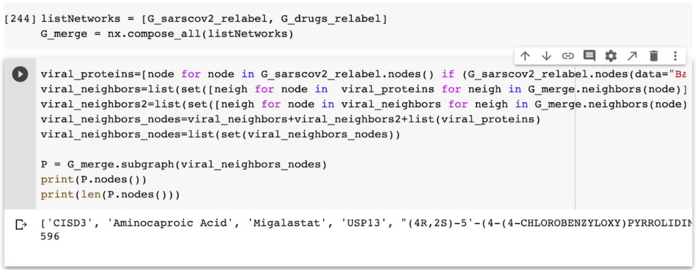
Correremos el siguiente código para probar que funcionan las dos redes juntas y se pueden diferenciar los nodos para trabajar mejor:
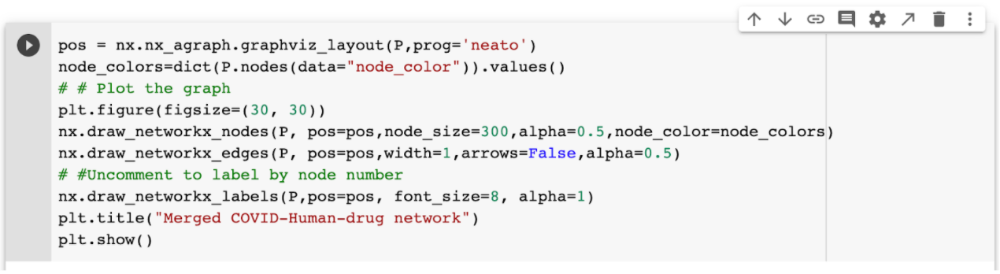
Nuestra red se verá de la siguiente manera, en donde los nodos de color Celeste = Fármacos, Amarillos = Proteínas Humanas, Rojos = Proteínas Virales.
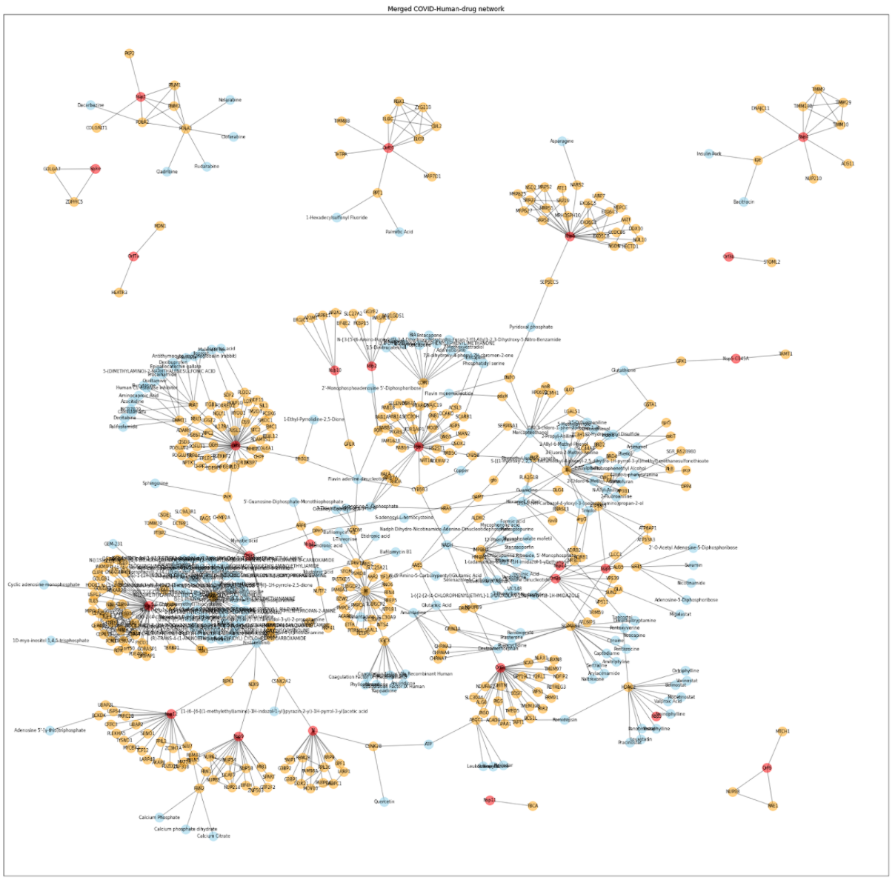
Ahora procederemos a sacar el Degree para ver cuales son los fármacos que tienen más aristas y por consiguiente más oportunidades para poder interactuar con los otros nodos, y así enfocarnos en estos para investigarlos más:
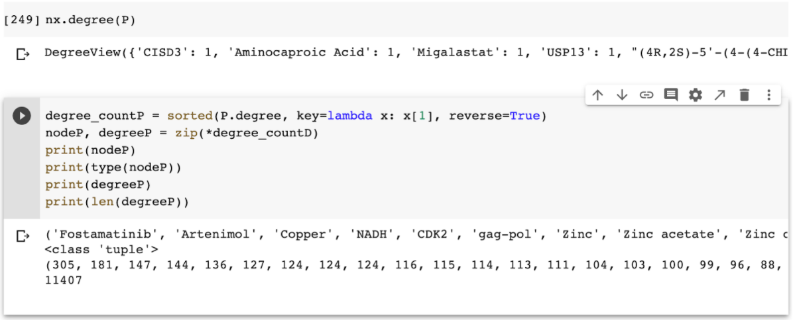
Ya que tenemos lo anterior, procederemos a graficar el Degree by Node, para poder hacer la información más interpretativa:
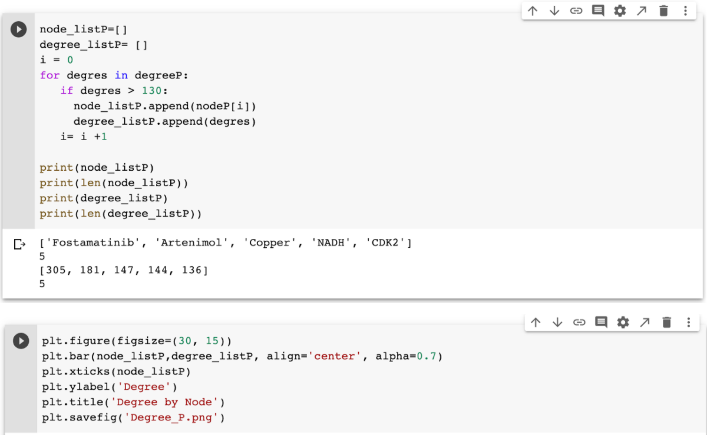
Así nos quedará:
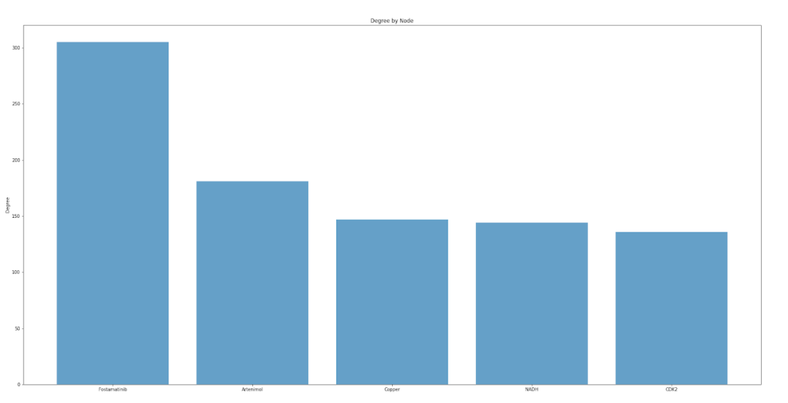
Y por último, ya tenemos los fármacos que más nos interesan para verlos más a fondo, analizar su relación con el COVID-19 y poder llegar a una conclusión.
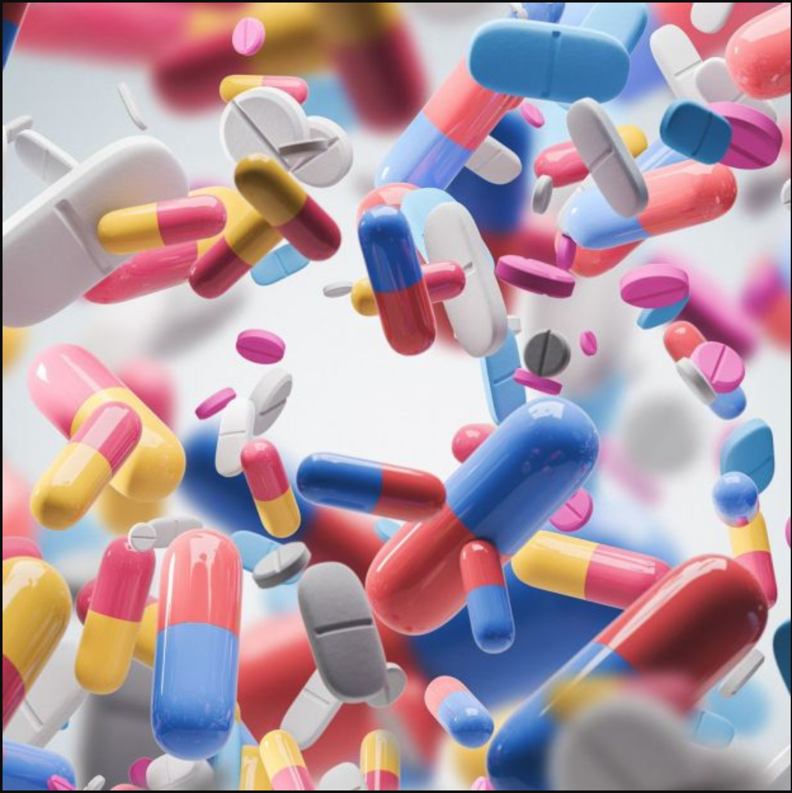